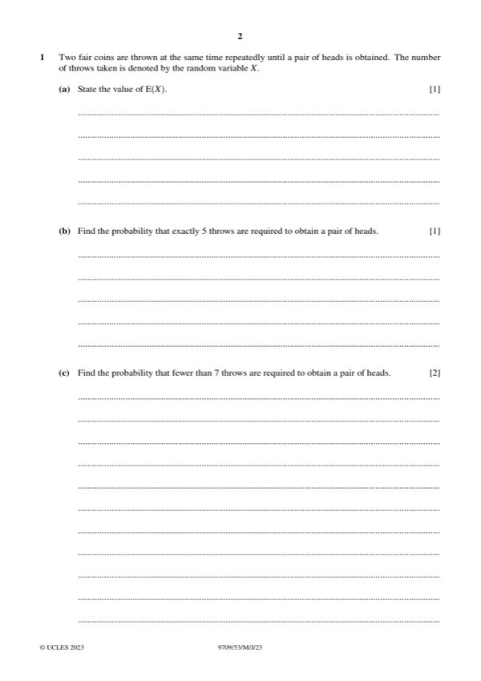
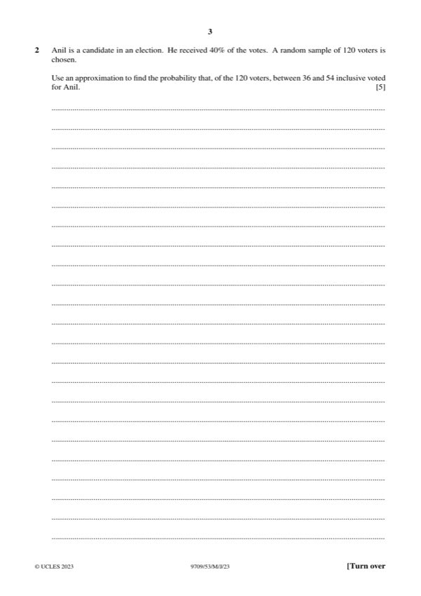
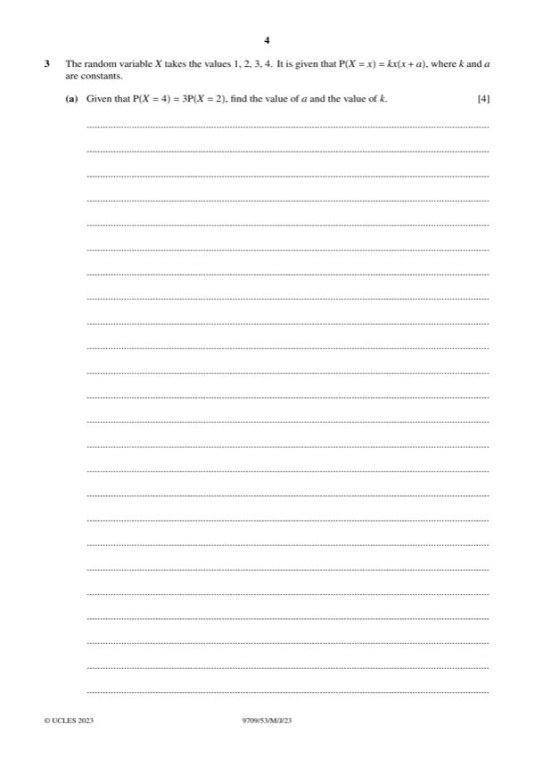
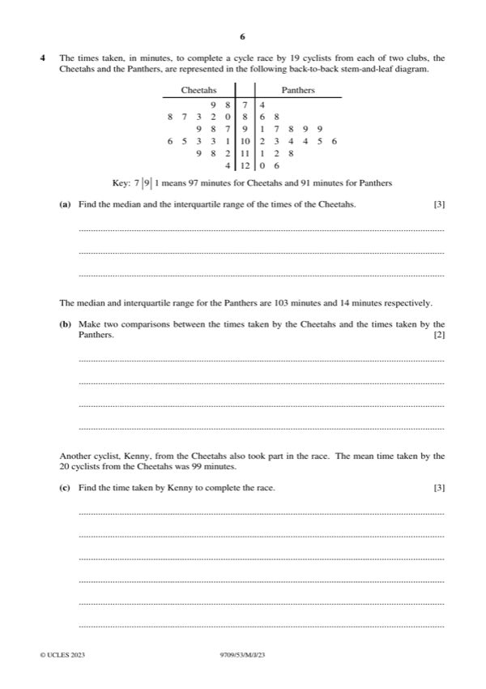
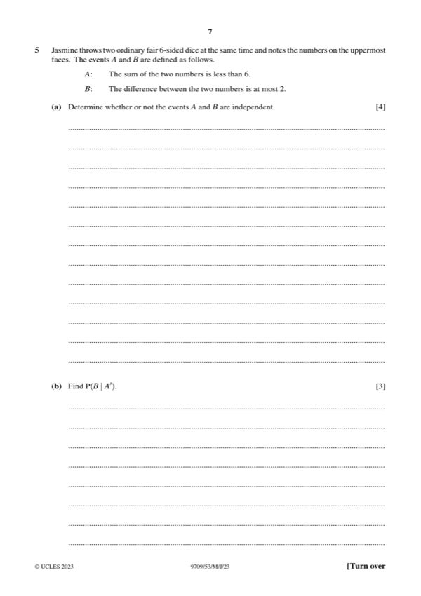
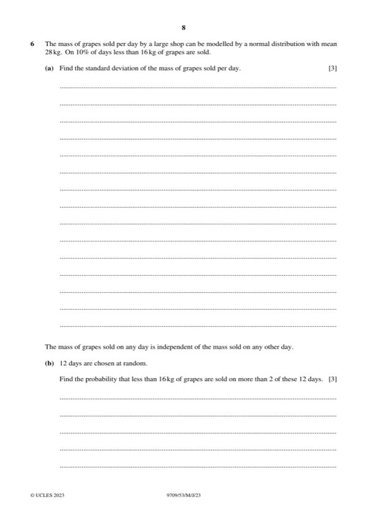
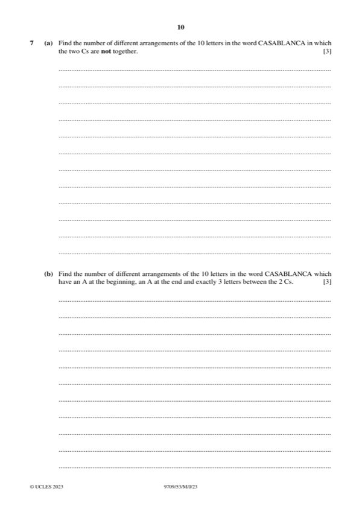

Question 0
Part 0 — solution
< p < 1 for all outcomes, must be numerical.
Mark points
- Include the ideas shown in the solution above.
Step-by-step solutions based on the mark scheme (not a mark-scheme dump).
Part 0 — solution

Part 1(a) — solution
Part 1 — solution
Part 1 — solution
Part 1 — solution
Answer: A1 1
Part 1 — solution

Part 2 — solution
Part 2 — solution
Part 2 — solution

Part 3(a) — solution
Part 3 — solution
Part 3 — solution
Part 3 — solution
Part 3 — solution

Part 4 — solution
Part 4 — solution
Answer: 4096
Part 4 — solution
Part 4(a) — solution
Part 4 — solution
Part 4 — solution
Part 4 — solution
Part 4 — solution
Part 4 — solution

Part 5 — solution
Answer: 12 5
Part 5 — solution
Part 5(a) — solution
Part 5 — solution
Part 5(b) — solution
Part 5 — solution
Part 5 — solution

Part 6 — solution
Part 6(a) — solution
Part 6(c) — solution
Answer: 625

Part 7(a) — solution
Part 7(b) — solution
Part 7(c) — solution
Part 8 — solution
Part 12 — solution
Part 13 — solution
Answer: 26 13
Part 16 — solution
Answer: 26
Part 16 — solution
Part 20 — solution
Answer: 20
Part 21 — solution
Part 23 — solution
Part 24 — solution
Answer: 24 2
Part 25 — solution
Answer: A1
Part 27 — solution
Part 36 — solution
Part 36 — solution
Part 36 — solution